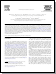

Citing Klusters, NeuroScope and NDManager
If you use Klusters, Neuroscope or NDManager for your analyses, please be kind enough to cite the following article in your publications:
.
Klusters, Neuroscope, NDManager: a Free Software Suite
for Neurophysiological Data Processing and Visualization,
J. Neurosci. Methods 155:207-216.
Downloading and Installing the Applications
The applications are available as readily installable packages for (K)Ubuntu, openSUSE and Fedora. For other GNU/Linux distributions, you will need to download the sources and follow the step-by-step instructions provided here to build the code.
Older versions are available here.
Select your distribution:| Package | Version | Description | Sources |
|---|---|---|---|
| LibKlustersShared | 2.0.0 | Shared library for all applications |  |
 Klusters Klusters | 2.0.0 | Cluster cutting application | |
| Neuroscope | 2.0.0 | Viewer for neurophysiological and behavioral data | |
| NDManager | 2.0.0 | Manager for neurophysiological and behavioral data | |
| NDManager-Plugins | 1.4.10 | Data processing tools for NDManager | |
 NPhys-Data NPhys-Data | 2.0.0 | Icons and mimetypes for Klusters, Neuroscope and NDManager | |
| Package | Version | Description | 12.04 |
|---|---|---|---|
| LibKlustersShared | 2.0.0 | Shared library for all applications | |
| Klusters | 2.0.0 | Cluster cutting application | |
| Neuroscope | 2.0.0 | Viewer for neurophysiological and behavioral data | |
| NDManager | 2.0.0 | Manager for neurophysiological and behavioral data | |
| NDManager-Plugins | 1.4.10 | Data processing tools for NDManager | |
| NPhys-Data | 2.0.0 | Icons and mimetypes for Klusters, Neuroscope and NDManager | |
| Package | Version | Description | 12.3 |
|---|---|---|---|
| LibKlustersShared | 2.0.0 | Shared library for all applications | |
| Klusters | 2.0.0 | Cluster cutting application | |
| Neuroscope | 2.0.0 | Viewer for neurophysiological and behavioral data | |
| NDManager | 2.0.0 | Manager for neurophysiological and behavioral data | |
| NDManager-Plugins | 1.4.9 | Data processing tools for NDManager | |
| NPhys-Data | 2.0.0 | Icons and mimetypes for Klusters, Neuroscope and NDManager | |
| Package | Version | Description | fc19 |
|---|---|---|---|
| LibKlustersShared | 2.0.0 | Shared library for all applications | |
| Klusters | 2.0.0 | Cluster cutting application | |
| Neuroscope | 2.0.0 | Viewer for neurophysiological and behavioral data | |
| NDManager | 2.0.0 | Manager for neurophysiological and behavioral data | |
| NDManager-Plugins | 1.4.9 | Data processing tools for NDManager | |
| NPhys-Data | 2.0.0 | Icons and mimetypes for Klusters, Neuroscope and NDManager | |